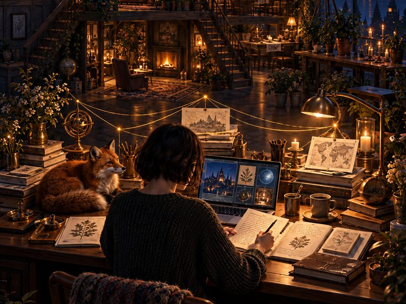
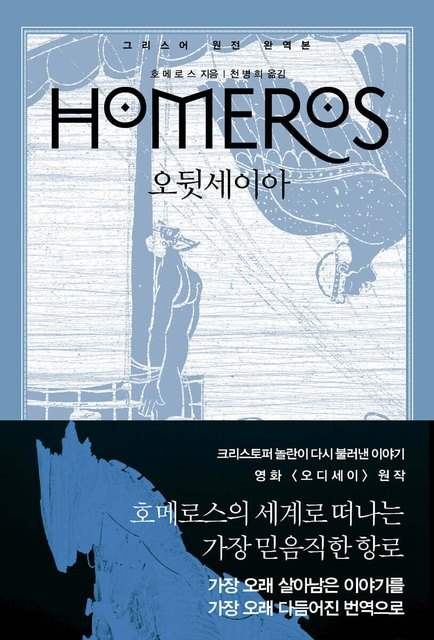

내 기록은 내 자산입니다
내가 읽고 쓰고 판단한 기록이 내 컴퓨터에 파일로 있습니다.인터넷 어디를 검색해도 나오지 않는 글입니다.
사막여우는 내 컴퓨터에 설치하는 세컨브레인입니다.흩어진 글과 기록을 한곳에 모아 AI가 읽을 수 있게 정리합니다.그 위에 내 일을 나눠 맡을 에이전트 팀을 세팅합니다.
01 · START WITH DEEPER
곰곰님 소개25만 원
정체성을 담는 나만의 AI 세컨브레인 시스템을 구축합니다.누구나 같은 AI 모델을 쓸 수 있습니다.결과는 그 모델이 읽는 기록과 기준에서 달라집니다.
세팅하는 것
이런 분께
시작하는 방법
WHY · PERSONAL AI
철학자 앤디 클라크와 데이비드 차머스는 1998년 논문 「The Extended Mind」(Analysis 58권 1호)에서 이렇게 썼습니다.수첩에 적어 두고 꺼내 쓰는 기억도 그 사람의 마음에 속합니다.사막여우가 읽는 기록은 내 로컬 컴퓨터에 저장됩니다.
내가 읽고 쓰고 판단한 기록이 내 컴퓨터에 파일로 있습니다.인터넷 어디를 검색해도 나오지 않는 글입니다.
내가 누구인지 AI에게 매번 설명하지 않아도 됩니다.사막여우는 내 기록과 말투, 지난 판단을 읽고 답합니다.기록을 남길수록 사막여우는 나를 더 정확히 읽습니다.
새 모델이 나오면 어제의 설계로는 그 모델을 다 쓰지 못합니다.디퍼가 매달 사막여우를 새 모델에 맞춰 손봅니다.꾸러미를 받아 새옷 한 번만 입히면 됩니다.

02 · BUILDER HOUSE
주말에 오기 어려우셔도 세팅은 원격으로 마칠 수 있습니다.빌더하우스는 화면으로 만나던 분들이 한 집에 모이는 자리입니다.시간이 맞을 때 한 번 오세요.
사람은 곁에,
도구는 뒤에.
PLACE · 포항
빌더하우스는 콤포스텔라 1기 별지기 새벽님의 살롱입니다.포항 새벽님의 집에서 엽니다.새벽님과 반딧불님이 맞아 주시고 퍼핀과 별지기님들이 진행합니다.밤에는 불을 피우고 둘러앉아 줌에서는 못 꺼냈던 질문을 꺼냅니다.
03 · AFTER SETUP
사막여우와 그동안의 기록은 내 컴퓨터에 남습니다.프론티어 AI 모델이 새로 나오는 간격은 점점 짧아지고 있습니다.디퍼 멤버십은 새 모델에 맞춘 사막여우를 매달 받는 일입니다.
디퍼 멤버십
TOGETHER · DEEPER FAMILY DAY디퍼 패밀리 데이
월요일 밤마다 디퍼 패밀리 모두가 함께 모입니다.멤버십 멤버와 살롱 참여자 누구나 오실 수 있고, 별도 비용은 없습니다.

11월 30일(월)『오뒷세이아』 9·10권 리딩호메로스 · 천병희 옮김 · 숲밤 9시 ~ 10시 30분두 번 모두 같은 시간 · 모임 링크는 모임 전에 알려 드립니다
THE DEEPER READING COLLECTION열두 권의 작은 책
디퍼 살롱의 문법·논리·수사를 짧은 책 열두 권으로 다시 엮었습니다.한 권에 네 장씩, 누구나 무료로 읽을 수 있습니다.
GRAMMAR · 나의 언어LOGIC · AI와 일하는 구조RHETORIC · 쓰고 전하는 일
CLBOOK · BOOKS WE MADE클북이 만든 책
클북이 저자와 함께 한 사람의 삶과 일을 엮어 펴낸 책입니다.


『그림과 만난 소년』 · 『다시 쓰는 마음』 · 『나를 잃지 않는 법』 · 『나는 언제 행복했더라』 · 『길을 열고 숲을 살리다』 · 『저녁 종이 울릴 때』 · 『삶이 레몬을 준다면 레모네이드를 만들어라』 · 『아무튼 지치지 않도록』 · 『하늘 투명 거울』 · 『기억이 나를 멈추게 한다면』 · 『내일은 날씨가 좋을지도 몰라』 · 『책으로 버티다』 · 『마녀 카페』 · 『오십, 질문을 시작하다』 · 『공대생 카밀은 왜 인문학에 빠졌을까?』 · 『쓰고 달콤하게』 · 『내 꿈은 퇴사다』 · 『문장 안에 살다』 · 『사커보이』 · 『숲에서 길을 만들고 물을 다루다』
많이 묻는 것